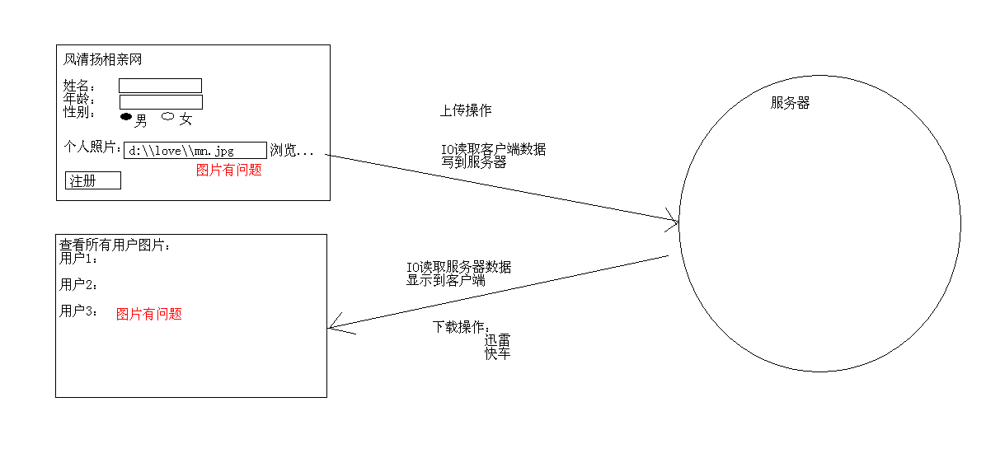
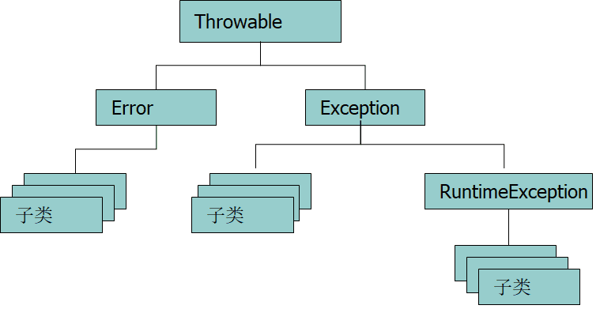

总结¶
1 2 3 4 5 6 7 8 9 10 11 12 13 14 15 16 17 18 19 20 21 22 23 24 25 26 27 28 29 30 31 32 33 34 35 36 37 38 39 40 41 42 43 44 45 46 47 48 49 50 51 52 53 54 55 56 57 58 59 60 61 62 63 64 65 66 67 68 | 1:异常(理解) (1)程序出现的不正常的情况。 (2)异常的体系 Throwable |--Error 严重问题，我们不处理。 |--Exception |--RuntimeException 运行期异常，我们需要修正代码 |--非RuntimeException 编译期异常，必须处理的，否则程序编译不通过 (3)异常的处理： A:JVM的默认处理 把异常的名称,原因,位置等信息输出在控制台，但是呢程序不能继续执行了。 B:自己处理 a:try...catch...finally 自己编写处理代码,后面的程序可以继续执行 b:throws 把自己处理不了的，在方法上声明，告诉调用者，这里有问题 (4)面试题 A:编译期异常和运行期异常的区别? 编译期异常 必须要处理的，否则编译不通过 运行期异常 可以不处理，也可以处理 B:throw和throws是的区别 throw: 在方法体中,后面跟的是异常对象名,并且只能是一个 throw抛出的是一个异常对象，说明这里肯定有一个异常产生了 throws: 在方法声明上,后面跟的是异常的类名,可以是多个 throws是声明方法有异常，是一种可能性，这个异常并不一定会产生 (5)finally关键字及其面试题 A:finally用于释放资源，它的代码永远会执行。特殊情况：在执行到finally之前jvm退出了 B:面试题 a:final,finally,finalize的区别? b:如果在catch里面有return,请问finally还执行吗?如果执行,在return前还是后 会，前。 实际上在中间。这个上课我们讲过 C:异常处理的变形 try...catch...finally try...catch... try...catch...catch... try...catch...catch...fianlly try...finally (6)自定义异常 继承自Exception或者RuntimeException,只需要提供无参构造和一个带参构造即可 (7)异常的注意实现 A:父的方法有异常抛出,子的重写方法在抛出异常的时候必须要小于等于父的异常 B:父的方法没有异常抛出,子的重写方法不能有异常抛出 C:父的方法抛出多个异常,子的重写方法必须比父少或者小 2:File(掌握) (1)IO流操作中大部分都是对文件的操作，所以Java就提供了File类供我们来操作文件 (2)构造方法 A:File file = new File("e:\\demo\\a.txt"); B:File file = new File("e:\\demo","a.txt"); C:File file = new File("e:\\demo"); File file2 = new File(file,"a.txt"); (3)File类的功能(自己补齐) A:创建功能 B:删除功能 C:重命名功能 D:判断功能 E:获取功能 F:高级获取功能 G:过滤器功能 (4)案例： A:输出指定目录下指定后缀名的文件名称 a:先获取所有的，在遍历的时候判断，再输出 b:先判断，再获取，最后直接遍历输出即可 B:批量修改文件名称 |
本章内容¶
-
异常
-
File
-
递归
-
字节流
-
转换流
-
字符流
-
其他流 
异常概述¶
-
异常：异常就是Java程序在运行过程中出现的错误。
-
异常由来：问题也是现实生活中一个具体事务，也可以通过java 的类的形式进行描述，并封装成对象。其实就是Java对不正常情况进行描述后的对象体现。
-
我们见过的异常,角标越界异常,空指针异常
异常分类图解¶

异常举例¶
- 除数为0
1 2 3 4 5 6 7 8 9 10 11 12 13 14 15 16 17 18 19 20 21 22 23 24 25 26 27 28 29 30 31 32 33 34 | package cn.itcast_01; /* * 异常：程序出现了不正常的情况。 * * 举例：今天天气很好，班长出去旅游。骑着自行车，去山里面呼吸新鲜空气。 * 问题1：山路塌陷了，班长及时停住了，但是过不去了。严重的问题。 * 问题2：班长出门推自行车，发现气没了，把气吹起来。出发前就应该检查的问题。 * 问题3:班长骑着车在山路上惬意的行驶着，山路两边是有小石子的，中间是平坦的水泥路。 * 一直在平坦的水泥路上行驶是没有任何问题的，但是呢，他偏偏喜欢骑到小石子上，结果爆胎了。旅游的过程中出现的问题。 * no zuo no die。 * * 程序的异常：Throwable * 严重问题：Error 我们不处理。这种问题一般都是很严重的，比如说内存溢出。 * 问题：Exception * 编译期问题:不是RuntimeException的异常 必须进行处理的，因为你不处理，编译就不能通过。 * 运行期问题:RuntimeException 这种问题我们也不处理，因为是你的问题，而且这个问题出现肯定是我们的代码不够严谨，需要修正代码的。 * * 如何程序出现了问题，我们没有做任何处理，最终jvm会做出默认的处理。 * 把异常的名称，原因及出现的问题等信息输出在控制台。 * 同时会结束程序。 */ public class ExceptionDemo { public static void main(String[] args) { //第一阶段 int a = 10; // int b = 2; int b = 0; System.out.println(a / b); //第二阶段 System.out.println("over"); } } |
问题
1 2 | Exception in thread "main" java.lang.ArithmeticException: / by zero at cn.itcast_01.ExceptionDemo.main(ExceptionDemo.java:29) |
- 数组访问越界
JVM的默认处理方案¶
-
把异常的名称，错误原因及异常出现的位置等信息输出在了控制台
-
程序停止执行
异常处理方案¶
-
异常处理方案
• try…catch…finally
• throws
try…catch处理方式¶
- 一个异常的情况
1 2 3 4 5 6 7 8 9 10 11 12 13 14 15 16 17 18 19 20 21 22 23 24 25 26 27 28 29 30 31 32 33 34 35 36 37 38 39 40 41 42 43 44 | package cn.itcast_02; /* * 我们自己如何处理异常呢? * A:try...catch...finally * B:throws 抛出 * * try...catch...finally的处理格式： * try { * 可能出现问题的代码; * }catch(异常名 变量) { * 针对问题的处理; * }finally { * 释放资源; * } * * 变形格式： * try { //这里的代码越少越好 * 可能出现问题的代码; * }catch(异常名 变量) { * 针对问题的处理; * } * * 注意： * A:try里面的代码越少越好 * B:catch里面必须有内容，哪怕是给出一个简单的提示 */ public class ExceptionDemo { public static void main(String[] args) { // 第一阶段 int a = 10; // int b = 2; int b = 0; try { System.out.println(a / b); } catch (ArithmeticException ae) { System.out.println("除数不能为0"); } // 第二阶段 System.out.println("over"); } } |
执行
1 2 | 除数不能为0 over |
-
多个异常的情况
• 平级情况
• 存在上下级的情况
1 2 3 4 5 6 7 8 9 10 11 12 13 14 15 16 17 18 19 20 21 22 23 24 25 26 27 28 29 30 31 32 33 34 35 36 37 38 39 40 41 42 43 44 45 46 47 48 49 50 51 52 53 54 55 56 57 58 59 60 61 62 63 64 65 66 67 68 69 70 71 72 73 74 75 76 77 78 79 80 81 82 83 84 85 86 87 88 89 90 91 92 93 94 95 96 97 98 99 100 101 102 103 104 105 106 107 108 109 110 111 112 113 114 115 116 117 118 119 120 121 122 123 124 125 126 127 | package cn.itcast_02; /* * A:一个异常 * B:二个异常的处理 * a:每一个写一个try...catch * b:写一个try，多个catch * try{ * ... * }catch(异常类名 变量名) { * ... * } * catch(异常类名 变量名) { * ... * } * ... * * 注意事项： * 1:能明确的尽量明确，不要用大的来处理。 * 2:平级关系的异常谁前谁后无所谓，如果出现了子父关系，父必须在后面。 * * 注意： * 一旦try里面出了问题，就会在这里把问题给抛出去，然后和catch里面的问题进行匹配， * 一旦有匹配的，就执行catch里面的处理，然后结束了try...catch * 继续执行后面的语句。 */ public class ExceptionDemo2 { public static void main(String[] args) { // method1(); // method2(); // method3(); method4(); } public static void method4() { int a = 10; int b = 0; int[] arr = { 1, 2, 3 }; // 爷爷在最后 try { System.out.println(a / b); System.out.println(arr[3]); System.out.println("这里出现了一个异常，你不太清楚是谁，该怎么办呢?"); } catch (ArithmeticException e) { System.out.println("除数不能为0"); } catch (ArrayIndexOutOfBoundsException e) { System.out.println("你访问了不该的访问的索引"); } catch (Exception e) { //这个可以匹配所有的异常 System.out.println("出问题了"); } // 爷爷在前面是不可以的 // try { // System.out.println(a / b); // System.out.println(arr[3]); // System.out.println("这里出现了一个异常，你不太清楚是谁，该怎么办呢?"); // } catch (Exception e) { // System.out.println("出问题了"); // } catch (ArithmeticException e) { // System.out.println("除数不能为0"); // } catch (ArrayIndexOutOfBoundsException e) { // System.out.println("你访问了不该的访问的索引"); // } System.out.println("over"); } // 两个异常的处理 public static void method3() { int a = 10; int b = 0; int[] arr = { 1, 2, 3 }; try { System.out.println(arr[3]); System.out.println(a / b); // System.out.println(arr[3]); } catch (ArithmeticException e) { System.out.println("除数不能为0"); } catch (ArrayIndexOutOfBoundsException e) { System.out.println("你访问了不该的访问的索引"); } System.out.println("over"); } // 两个异常 public static void method2() { int a = 10; int b = 0; try { System.out.println(a / b); } catch (ArithmeticException e) { System.out.println("除数不能为0"); } int[] arr = { 1, 2, 3 }; try { System.out.println(arr[3]); } catch (ArrayIndexOutOfBoundsException e) { System.out.println("你访问了不该的访问的索引"); } System.out.println("over"); } // 一个异常 public static void method1() { // 第一阶段 int a = 10; // int b = 2; int b = 0; try { System.out.println(a / b); } catch (ArithmeticException ae) { System.out.println("除数不能为0"); } // 第二阶段 System.out.println("over"); } } |
• JDK7的新特性及注意事项
1 2 3 4 5 6 7 8 9 10 11 12 13 14 15 16 17 18 19 20 21 22 23 24 25 26 27 28 29 30 31 32 33 34 35 36 37 38 39 40 41 42 43 44 45 46 47 48 | package cn.itcast_02; /* * JDK7出现了一个新的异常处理方案： * try{ * * }catch(异常名1 | 异常名2 | ... 变量 ) { * ... * } * * 注意：这个方法虽然简洁，但是也不够好。 * A:处理方式是一致的。(实际开发中，好多时候可能就是针对同类型的问题，给出同一个处理) * B:多个异常间必须是平级关系。 */ public class ExceptionDemo3 { public static void main(String[] args) { method(); } public static void method() { int a = 10; int b = 0; int[] arr = { 1, 2, 3 }; // try { // System.out.println(a / b); // System.out.println(arr[3]); // System.out.println("这里出现了一个异常，你不太清楚是谁，该怎么办呢?"); // } catch (ArithmeticException e) { // System.out.println("除数不能为0"); // } catch (ArrayIndexOutOfBoundsException e) { // System.out.println("你访问了不该的访问的索引"); // } catch (Exception e) { // System.out.println("出问题了"); // } // JDK7的处理方案 try { System.out.println(a / b); System.out.println(arr[3]); } catch (ArithmeticException | ArrayIndexOutOfBoundsException e) { System.out.println("出问题了"); } System.out.println("over"); } } |
编译时异常和运行时异常的区别¶
-
Java中的异常被分为两大类：编译时异常和运行时异常。所有的RuntimeException类及其子类的实例被称为运行时异常，其他的异常就是编译时异常
-
编译时异常
• Java程序必须显示处理，否则程序就会发生错误，无法通过编译
-
运行时异常
• 无需显示处理，也可以和编译时异常一样处理
1 2 3 4 5 6 7 8 9 10 11 12 13 14 15 16 17 18 19 20 21 22 23 24 25 26 27 28 29 30 31 32 | package cn.itcast_03; import java.text.ParseException; import java.text.SimpleDateFormat; import java.util.Date; /* * 编译时异常和运行时异常的区别 * 编译期异常：Java程序必须显示处理，否则程序就会发生错误，无法通过编译 * 运行期异常：无需显示处理，也可以和编译时异常一样处理 */ public class ExceptionDemo { public static void main(String[] args) { // int a = 10; // int b = 0; // if (b != 0) { // System.out.println(a / b); // } String s = "2014-11-20"; // SimpleDateFormat sdf = new SimpleDateFormat("yyyy-MM-dd HH:mm:ss"); SimpleDateFormat sdf = new SimpleDateFormat("yyyy-MM-dd"); // Date d = sdf.parse(s); try { Date d = sdf.parse(s); System.out.println(d); } catch (ParseException e) { // e.printStackTrace(); System.out.println("解析日期出问题了"); } } } |
Throwable中的方法¶
-
getMessage()
• 获取异常信息，返回字符串。
-
toString()
• 获取异常类名和异常信息，返回字符串。
-
printStackTrace()
• 获取异常类名和异常信息，以及异常出现在程序中的位置。返回值void。
-
printStackTrace(PrintStream s)
• 通常用该方法将异常内容保存在日志文件中，以便查阅。
1 2 3 4 5 6 7 8 9 10 11 12 13 14 15 16 17 18 19 20 21 22 23 24 25 26 27 28 29 30 31 32 33 34 35 36 37 38 39 40 41 42 43 44 | package cn.itcast_04; import java.text.ParseException; import java.text.SimpleDateFormat; import java.util.Date; /* * 在try里面发现问题后，jvm会帮我们生成一个异常对象，然后把这个对象抛出，和catch里面的类进行匹配。 * 如果该对象是某个类型的，就会执行该catch里面的处理信息。 * * 异常中要了解的几个方法： * public String getMessage():异常的消息字符串 * public String toString():返回异常的简单信息描述 * 此对象的类的 name(全路径名) * ": "（冒号和一个空格） * 调用此对象 getLocalizedMessage()方法的结果 (默认返回的是getMessage()的内容) * printStackTrace() 获取异常类名和异常信息，以及异常出现在程序中的位置。返回值void。把信息输出在控制台。 */ public class ExceptionDemo { public static void main(String[] args) { String s = "2014-11-20"; SimpleDateFormat sdf = new SimpleDateFormat("yyyy-MM-dd HH:mm:ss"); try { Date d = sdf.parse(s); // 创建了一个ParseException对象，然后抛出去，和catch里面进行匹配 System.out.println(d); } catch (ParseException e) { // ParseException e = new ParseException(); // ParseException // e.printStackTrace(); // getMessage() // System.out.println(e.getMessage()); // Unparseable date: "2014-11-20" // toString() // System.out.println(e.toString()); // java.text.ParseException: Unparseable date: "2014-11-20" e.printStackTrace(); //跳转到某个指定的页面(index.html) } System.out.println("over"); } } |
执行
1 2 3 4 | java.text.ParseException: Unparseable date: "2014-11-20" at java.text.DateFormat.parse(Unknown Source) at cn.itcast_04.ExceptionDemo.main(ExceptionDemo.java:24) over |
throws¶
-
定义功能方法时，需要把出现的问题暴露出来让调用者去处理。那么就通过throws在方法上标识。
-
举例分别演示编译时异常和运行时异常的抛出
1 2 3 4 5 6 7 8 9 10 11 12 13 14 15 16 17 18 19 20 21 22 23 24 25 26 27 28 29 30 31 32 33 34 35 36 37 38 39 40 41 42 43 44 45 46 47 48 49 50 51 52 53 | package cn.itcast_05; import java.text.ParseException; import java.text.SimpleDateFormat; import java.util.Date; /* * 有些时候，我们是可以对异常进行处理的，但是又有些时候，我们根本就没有权限去处理某个异常。 * 或者说，我处理不了，我就不处理了。 * 为了解决出错问题，Java针对这种情况，就提供了另一种处理方案：抛出。 * * 格式： * throws 异常类名 * 注意：这个格式必须跟在方法的括号后面。 * * 注意： * 尽量不要在main方法上抛出异常。 * 但是我讲课为了方便我就这样做了。 * * 小结： * 编译期异常抛出，将来调用者必须处理。 * 运行期异常抛出，将来调用可以不用处理。 */ public class ExceptionDemo { public static void main(String[] args) { System.out.println("今天天气很好"); try { method(); } catch (ParseException e) { // TODO Auto-generated catch block,自动生成的程序 e.printStackTrace(); } System.out.println("但是就是不该有雾霾"); method2(); } // 运行期异常的抛出 public static void method2() throws ArithmeticException { int a = 10; int b = 0; System.out.println(a / b); } // 编译期异常的抛出 // 在方法声明上抛出，是为了告诉调用者，你注意了，我有问题。 public static void method() throws ParseException { String s = "2014-11-20"; SimpleDateFormat sdf = new SimpleDateFormat("yyyy-MM-dd HH:mm:ss"); Date d = sdf.parse(s); System.out.println(d); } } |
throw¶
-
在功能方法内部出现某种情况，程序不能继续运行，需要进行跳转时，就用throw把异常对象抛出。
-
举例分别演示编译时异常对象和运行时异常对象的抛出
1 2 3 4 5 6 7 8 9 10 11 12 13 14 15 16 17 18 19 20 21 22 23 24 25 26 27 28 29 30 31 32 33 34 35 36 37 38 39 40 41 42 43 44 45 46 47 48 49 50 51 52 53 | package cn.itcast_06; /* * throw:如果出现了异常情况，我们可以把该异常抛出，这个时候的抛出的应该是异常的对象。 * * throws和throw的区别(面试题) throws 用在方法声明后面，跟的是异常类名 可以跟多个异常类名，用逗号隔开 表示抛出异常，由该方法的调用者来处理 throws表示出现异常的一种可能性，并不一定会发生这些异常 throw 用在方法体内，跟的是异常对象名 只能抛出一个异常对象名 表示抛出异常，由方法体内的语句处理 throw则是抛出了异常，执行throw则一定抛出了某种异常 */ public class ExceptionDemo { public static void main(String[] args) { // method(); try { method2(); } catch (Exception e) { // TODO Auto-generated catch block e.printStackTrace(); } // try { // method2(); // } catch (Exception e) { // e.printStackTrace(); // } } public static void method() { //运行时期的异常 int a = 10; int b = 0; if (b == 0) { throw new ArithmeticException(); } else { System.out.println(a / b); } } public static void method2() throws Exception { int a = 10; int b = 0; if (b == 0) { throw new Exception();//这是一条正常 的语句是编译器的异常需要在方法上使用throws } else { System.out.println(a / b); } } } |
throws和throw的区别¶
-
throws
• 用在方法声明后面，跟的是异常类名
• 可以跟多个异常类名，用逗号隔开
• 表示抛出异常，由该方法的调用者来处理
• throws表示出现异常的一种可能性，并不一定会发生这些异常
-
throw
• 用在方法体内，跟的是异常对象名
• 只能抛出一个异常对象名
• 表示抛出异常，由方法体内的语句处理
• throw则是抛出了异常，执行throw则一定抛出了某种异常
我们到底该如何处理异常呢¶
-
原则:如果该功能内部可以将问题处理,用try,如果处理不了,交由调用者处理,这是用throws
-
区别:
• 后续程序需要继续运行就try
• 后续程序不需要继续运行就throws
-
举例:
• 感冒了就自己吃点药就好了,try
• 吃了好几天药都没好结果得了H7N9,那就的得throws 到医院
• 如果医院没有特效药就变成Error了
finally的特点作用及面试题¶
-
finally的特点
• 被finally控制的语句体一定会执行
• 特殊情况：在执行到finally之前jvm退出了(比如
System.exit(0))
1 2 3 4 5 6 7 8 9 10 11 12 13 14 15 16 17 18 19 20 21 22 23 24 25 26 27 28 29 30 31 32 33 | package cn.itcast_07; import java.text.ParseException; import java.text.SimpleDateFormat; import java.util.Date; /* * finally:被finally控制的语句体一定会执行 * 注意：如果在执行到finally之前jvm退出了，就不能执行了。 * * A:格式 * try...catch...finally... * B:用于释放资源，在IO流操作和数据库操作中会见到 */ public class FinallyDemo { public static void main(String[] args) { String s = "2014-11-20"; SimpleDateFormat sdf = new SimpleDateFormat("yyyy-MM-dd HH:mm:ss"); Date d = null; try { // System.out.println(10 / 0); d = sdf.parse(s); } catch (ParseException e) { e.printStackTrace(); System.exit(0); //执行了退出虚拟机的话,finally是不能执行的 } finally { System.out.println("这里的代码是可以执行的"); } System.out.println(d); } } |
-
finally的作用
• 用于释放资源，在IO流操作和数据库操作中会见到
-
finally相关的面试题
• final,finally和finalize的区别
• 如果catch里面有return语句，请问finally的代码还会执行吗?如果会，请问是在return前还是return后。
1 2 3 4 5 6 7 8 9 10 11 12 13 14 15 16 17 18 19 20 21 22 23 24 25 26 27 28 29 30 31 32 33 34 35 36 37 38 39 40 41 42 43 44 45 46 47 48 49 50 51 52 | package cn.itcast_07; /* * 面试题： * 1:final,finally和finalize的区别 * final：最终的意思，可以修饰类，成员变量，成员方法 * 修饰类，类不能被继承 * 修饰变量，变量是常量 * 修饰方法，方法不能被重写 * finally：是异常处理的一部分，用于释放资源。 * 一般来说，代码肯定会执行，特殊情况：在执行到finally之前jvm退出了 * finalize：是Object类的一个方法，用于垃圾回收 * * 2:如果catch里面有return语句，请问finally里面的代码还会执行吗? * 如果会，请问是在return前，还是return后。 * 会。前。 * * 准确的说，应该是在中间。 * * 3:try...catch...finally的格式变形 * A:try...catch...finally * B:try...catch * C:try...catch...catch... * D:try...catch...catch...finally * E:try...finally * 这种做法的目前是为了释放资源。 */ public class FinallyDemo2 { public static void main(String[] args) { System.out.println(getInt()); } public static int getInt() { int a = 10; try { System.out.println(a / 0); a = 20; } catch (ArithmeticException e) { a = 30; return a; /* * return a在程序执行到这一步的时候，这里不是return a而是return 30;这个返回路径就形成了。 * 但是呢，它发现后面还有finally，所以继续执行finally的内容，a=40 * 再次回到以前的返回路径，继续走return 30; 这个说的是finally,没有return的情况 */ } finally { a = 40; return a;//如果这样结果就是40了。因为return只有一个返回路径 } // return a; } } |
自定义异常¶
-
考试成绩必须在0-100之间
-
很明显java没有对应的异常，需要我们自己来做一个异常
-
自定义异常
• 继承自Exception
• 继承自RuntimeException 异常类
1 2 3 4 5 6 7 8 9 10 11 12 13 14 15 16 17 18 19 20 21 22 | package cn.itcast_08; /* * java不可能对所有的情况都考虑到，所以，在实际的开发中，我们可能需要自己定义异常。 * 而我们自己随意的写一个类，是不能作为异常类来看的，要想你的类是一个异常类，就必须继承自Exception或者RuntimeException * * 两种方式： * A:继承Exception //编译异常 * B:继承RuntimeException //运行异常 */ public class MyException extends Exception { public MyException() { // 自动生成构造方法 } public MyException(String message) { super(message); } } // public class MyException extends RuntimeException { // // } |
抛出异常的类
1 2 3 4 5 6 7 8 9 10 11 12 13 14 15 16 17 18 19 20 | package cn.itcast_08; public class Teacher { public void check(int score) throws MyException { if (score > 100 || score < 0) { throw new MyException("分数必须在0-100之间"); //抛出一个新的异常对象 } else { System.out.println("分数没有问题"); } } // 针对MyException继承自RuntimeException .运行异常不需要使用throws // public void check(int score) { // if (score > 100 || score < 0) { // throw new MyException(); // } else { // System.out.println("分数没有问题"); // } // } } |
测试
1 2 3 4 5 6 7 8 9 10 11 12 13 14 15 16 17 18 19 20 21 | package cn.itcast_08; import java.util.Scanner; /* * 自定义异常测试类 */ public class StudentDemo { public static void main(String[] args) { Scanner sc = new Scanner(System.in); System.out.println("请输入学生成绩："); int score = sc.nextInt(); Teacher t = new Teacher(); try { t.check(score); } catch (MyException e) { e.printStackTrace(); } } } |
异常注意事项¶
-
子类重写父类方法时，子类的方法必须抛出相同的异常或父类异常的子类。(父亲坏了,儿子不能比父亲更坏)
-
如果父类抛出了多个异常,子类重写父类时,只能抛出相同的异常或者是他的子集,子类不能抛出父类没有的异常
-
如果被重写的方法没有异常抛出,那么子类的方法绝对不
可以抛出异常,如果子类方法内有异常发生,那么子类只能try,不能throws
1 2 3 4 5 6 7 8 9 10 11 12 13 14 15 16 17 18 19 20 21 22 23 24 25 26 27 28 29 30 31 32 33 34 35 36 37 38 | package cn.itcast_09; import java.text.ParseException; import java.text.SimpleDateFormat; import java.util.Date; /* * 异常注意事项: * A:子类重写父类方法时，子类的方法必须抛出相同的异常或父类异常的子类。(父亲坏了,儿子不能比父亲更坏) * B:如果父类抛出了多个异常,子类重写父类时,只能抛出相同的异常或者是他的子集,子类不能抛出父类没有的异常 * C:如果被重写的方法没有异常抛出,那么子类的方法绝对不可以抛出异常,如果子类方法内有异常发生,那么子类只能try,不能throws */ public class ExceptionDemo { } class Fu { public void show() throws Exception { } public void method() { } } class Zi extends Fu { @Override public void show() throws ArithmeticException { } @Override public void method() { // String s = "2014-11-20"; // SimpleDateFormat sdf = new SimpleDateFormat(); // Date d = sdf.parse(s); // System.out.println(d); } } |
File类概述和构造方法¶
-
File类的概述 • 文件和目录路径名的抽象表示形式
-
构造方法
• public File(String pathname)
• public File(String parent,String child)
• public File(File parent,String child)
1 2 3 4 5 6 7 8 9 10 11 12 13 14 15 16 17 18 19 20 21 22 23 24 25 26 27 28 29 30 31 32 33 | package cn.itcast_01; import java.io.File; /* * 我们要想实现IO的操作，就必须知道硬盘上文件的表现形式。 * 而Java就提供了一个类File供我们使用。 * * File:文件和目录(文件夹)路径名的抽象表示形式 * 构造方法： * File(String pathname)：根据一个路径得到File对象 * File(String parent, String child):根据一个目录和一个子文件/目录得到File对象 * File(File parent, String child):根据一个父File对象和一个子文件/目录得到File对象 */ public class FileDemo { public static void main(String[] args) { // File(String pathname)：根据一个路径得到File对象 // 把e:\\demo\\a.txt封装成一个File对象 File file = new File( "M:\\java视频\\01.第一阶段\\day19\\code\\day19_File\\demo\\a.txt"); // File(String parent, String child):根据一个目录和一个子文件/目录得到File对象 File file2 = new File( "M:\\java视频\\01.第一阶段\\day19\\code\\day19_File\\demo", "a.txt"); // File(File parent, String child):根据一个父File对象和一个子文件/目录得到File对象 File file3 = new File( "M:\\java视频\\01.第一阶段\\day19\\code\\day19_File\\demo"); File file4 = new File(file3, "a.txt"); // 以上三种方式其实效果一样 } } |
File类的成员方法¶
-
创建功能
• public boolean createNewFile()
• public boolean mkdir()
• public boolean mkdirs()
1 2 3 4 5 6 7 8 9 10 11 12 13 14 15 16 17 18 19 20 21 22 23 24 25 26 27 28 29 30 31 32 33 34 35 36 37 38 39 40 41 42 43 44 45 46 47 48 | package cn.itcast_02; import java.io.File; import java.io.IOException; /* *创建功能： *public boolean createNewFile():创建文件 如果存在这样的文件，就不创建了 *public boolean mkdir():创建文件夹 如果存在这样的文件夹，就不创建了 *public boolean mkdirs():创建文件夹,如果父文件夹不存在，会帮你创建出来 * *骑白马的不一定是王子，可能是班长。 *注意：你到底要创建文件还是文件夹，你最清楚，方法不要调错了。 */ public class FileDemo { public static void main(String[] args) throws IOException { // 需求：我要在e盘目录下创建一个文件夹demo File file = new File("e:\\demo"); System.out.println("mkdir:" + file.mkdir()); // 需求:我要在e盘目录demo下创建一个文件a.txt File file2 = new File("e:\\demo\\a.txt"); System.out.println("createNewFile:" + file2.createNewFile()); // 需求：我要在e盘目录test下创建一个文件b.txt // Exception in thread "main" java.io.IOException: 系统找不到指定的路径。 // 注意：要想在某个目录下创建内容，该目录首先必须存在。 // File file3 = new File("e:\\test\\b.txt"); // System.out.println("createNewFile:" + file3.createNewFile()); // 需求:我要在e盘目录test下创建aaa目录 //首先test必须存在 // File file4 = new File("e:\\test\\aaa"); // System.out.println("mkdir:" + file4.mkdir()); // File file5 = new File("e:\\test"); // File file6 = new File("e:\\test\\aaa"); // System.out.println("mkdir:" + file5.mkdir()); // System.out.println("mkdir:" + file6.mkdir()); // 其实我们有更简单的方法 File file7 = new File("e:\\aaa\\bbb\\ccc\\ddd"); System.out.println("mkdirs:" + file7.mkdirs()); // 看下面的这个东西： File file8 = new File("e:\\liuyi\\a.txt"); System.out.println("mkdirs:" + file8.mkdirs()); } } |
-
删除功能
• public boolean delete()
1 2 3 4 5 6 7 8 9 10 11 12 13 14 15 16 17 18 19 20 21 22 23 24 25 26 27 28 29 30 31 32 33 34 35 36 37 38 39 40 41 42 43 44 45 | package cn.itcast_03; import java.io.File; import java.io.IOException; /* * 删除功能:public boolean delete() * * 注意： * A:如果你创建文件或者文件夹忘了写盘符路径，那么，默认在项目路径下。 * B:Java中的删除不走回收站。 * C:要删除一个文件夹，请注意该文件夹内不能包含文件或者文件夹 */ public class FileDemo { public static void main(String[] args) throws IOException { // 创建文件 // File file = new File("e:\\a.txt"); // System.out.println("createNewFile:" + file.createNewFile()); // 我不小心写成这个样子了 File file = new File("a.txt"); System.out.println("createNewFile:" + file.createNewFile()); // 继续玩几个 File file2 = new File("aaa\\bbb\\ccc"); System.out.println("mkdirs:" + file2.mkdirs()); // 删除功能：我要删除a.txt这个文件 File file3 = new File("a.txt"); System.out.println("delete:" + file3.delete()); // 删除功能：我要删除ccc这个文件夹 File file4 = new File("aaa\\bbb\\ccc"); System.out.println("delete:" + file4.delete()); // 删除功能：我要删除aaa文件夹 // File file5 = new File("aaa"); // System.out.println("delete:" + file5.delete()); File file6 = new File("aaa\\bbb"); File file7 = new File("aaa"); System.out.println("delete:" + file6.delete()); System.out.println("delete:" + file7.delete()); } } |
-
重命名功能
• public boolean renameTo(File dest)
1 2 3 4 5 6 7 8 9 10 11 12 13 14 15 16 17 18 19 20 21 22 23 24 25 | package cn.itcast_04; import java.io.File; /* * 重命名功能:public boolean renameTo(File dest) * 如果路径名相同，就是改名。 * 如果路径名不同，就是改名并剪切。 * * 路径以盘符开始：绝对路径 c:\\a.txt * 路径不以盘符开始：相对路径 a.txt */ public class FileDemo { public static void main(String[] args) { // 创建一个文件对象 File file = new File("林青霞.jpg"); // 需求：我要修改这个文件的名称为"东方不败.jpg" File newFile = new File("东方不败.jpg"); System.out.println("renameTo:" + file.renameTo(newFile)); File file2 = new File("东方不败.jpg"); File newFile2 = new File("e:\\林青霞.jpg"); System.out.println("renameTo:" + file2.renameTo(newFile2)); } } |
File类的成员方法¶
-
判断功能
• public boolean isDirectory()
• public boolean isFile()
• public boolean exists()
• public boolean canRead()
• public boolean canWrite()
• public boolean isHidden()
1 2 3 4 5 6 7 8 9 10 11 12 13 14 15 16 17 18 19 20 21 22 23 24 25 26 | package cn.itcast_05; import java.io.File; /* * 判断功能: * public boolean isDirectory():判断是否是目录 * public boolean isFile():判断是否是文件 * public boolean exists():判断是否存在 * public boolean canRead():判断是否可读 * public boolean canWrite():判断是否可写 * public boolean isHidden():判断是否隐藏 */ public class FileDemo { public static void main(String[] args) { // 创建文件对象 File file = new File("a.txt"); System.out.println("isDirectory:" + file.isDirectory());// false System.out.println("isFile:" + file.isFile());// true System.out.println("exists:" + file.exists());// true System.out.println("canRead:" + file.canRead());// true System.out.println("canWrite:" + file.canWrite());// true System.out.println("isHidden:" + file.isHidden());// false } } |
执行
1 2 3 4 5 6 | isDirectory:false isFile:true exists:true canRead:true canWrite:true isHidden:false |
File类的成员方法¶
-
基本获取功能
• public String getAbsolutePath()
• public String getPath()
• public String getName()
• public long length()
• public long lastModified()
1 2 3 4 5 6 7 8 9 10 11 12 13 14 15 16 17 18 19 20 21 22 23 24 25 26 27 28 29 30 31 32 | package cn.itcast_06; import java.io.File; import java.text.SimpleDateFormat; import java.util.Date; /* * 获取功能： * public String getAbsolutePath()：获取绝对路径 * public String getPath():获取相对路径 * public String getName():获取名称 * public long length():获取长度。字节数 * public long lastModified():获取最后一次的修改时间，毫秒值 */ public class FileDemo { public static void main(String[] args) { // 创建文件对象 File file = new File("demo\\test.txt"); System.out.println("getAbsolutePath:" + file.getAbsolutePath()); System.out.println("getPath:" + file.getPath()); System.out.println("getName:" + file.getName()); System.out.println("length:" + file.length()); System.out.println("lastModified:" + file.lastModified()); // 1416471971031 Date d = new Date(1416471971031L); SimpleDateFormat sdf = new SimpleDateFormat("yyyy-MM-dd HH:mm:ss"); String s = sdf.format(d); System.out.println(s); } } |
执行
1 2 3 4 5 6 | getAbsolutePath:M:\java视频\01.第一阶段\day19\code\day19_File\demo\test.txt getPath:demo\test.txt getName:test.txt length:5 lastModified:1426756289000 2014-11-20 16:26:11 |
-
高级获取功能
• public String[] list()
• public File[] listFiles()
1 2 3 4 5 6 7 8 9 10 11 12 13 14 15 16 17 18 19 20 21 22 23 24 25 26 27 28 | package cn.itcast_07; import java.io.File; /* * 获取功能： * public String[] list():获取指定目录下的所有文件或者文件夹的名称数组 * public File[] listFiles():获取指定目录下的所有文件或者文件夹的File数组 */ public class FileDemo { public static void main(String[] args) { // 指定一个目录 File file = new File("e:\\"); // public String[] list():获取指定目录下的所有文件或者文件夹的名称数组 String[] strArray = file.list(); for (String s : strArray) { System.out.println(s); } System.out.println("------------"); // public File[] listFiles():获取指定目录下的所有文件或者文件夹的File数组 File[] fileArray = file.listFiles(); for (File f : fileArray) { System.out.println(f.getName()); } } } |
File类练习¶
- 判断E盘目录下是否有后缀名为.jpg的文件，如果有，就输出此文件名称
1 2 3 4 5 6 7 8 9 10 11 12 13 14 15 16 17 18 19 20 21 22 23 24 25 26 27 28 29 30 31 32 33 34 35 36 37 38 | package cn.itcast_08; import java.io.File; /* * 判断E盘目录下是否有后缀名为.jpg的文件，如果有，就输出此文件名称 * * 分析： * A:封装e判断目录 * B:获取该目录下所有文件或者文件夹的File数组 * C:遍历该File数组，得到每一个File对象，然后判断 * D:是否是文件 * 是：继续判断是否以.jpg结尾 * 是：就输出该文件名称 * 否：不搭理它 * 否：不搭理它 */ public class FileDemo { public static void main(String[] args) { // 封装e判断目录 File file = new File("e:\\"); // 获取该目录下所有文件或者文件夹的File数组 File[] fileArray = file.listFiles(); // 遍历该File数组，得到每一个File对象，然后判断 for (File f : fileArray) { // 是否是文件 if (f.isFile()) { // 继续判断是否以.jpg结尾 if (f.getName().endsWith(".jpg")) { // 就输出该文件名称 System.out.println(f.getName()); } } } } } |
-
文件名称过滤器的实现思想及代码
• public String[] list(FilenameFilter filter)
• public File[] listFiles(FilenameFilter filter)
1 2 3 4 5 6 7 8 9 10 11 12 13 14 15 16 17 18 19 20 21 22 23 24 25 26 27 28 29 30 31 32 33 34 35 36 37 38 39 40 41 42 43 44 | package cn.itcast_08; import java.io.File; import java.io.FilenameFilter; /* * 判断E盘目录下是否有后缀名为.jpg的文件，如果有，就输出此文件名称 * A:先获取所有的，然后遍历的时候，依次判断，如果满足条件就输出。 * B:获取的时候就已经是满足条件的了，然后输出即可。 * * 要想实现这个效果，就必须学习一个接口：文件名称过滤器 * public String[] list(FilenameFilter filter) * public File[] listFiles(FilenameFilter filter) */ public class FileDemo2 { public static void main(String[] args) { // 封装e判断目录 File file = new File("e:\\"); // 获取该目录下所有文件或者文件夹的String数组 // public String[] list(FilenameFilter filter) String[] strArray = file.list(new FilenameFilter() { @Override public boolean accept(File dir, String name) { // return false; // return true; // 通过这个测试，我们就知道了，到底把这个文件或者文件夹的名称加不加到数组中，取决于这里的返回值是true还是false // 所以，这个的true或者false应该是我们通过某种判断得到的 // System.out.println(dir + "---" + name); // File file = new File(dir, name); // // System.out.println(file); // boolean flag = file.isFile(); // boolean flag2 = name.endsWith(".jpg"); // return flag && flag2; return new File(dir, name).isFile() && name.endsWith(".jpg"); } }); // 遍历 for (String s : strArray) { System.out.println(s); } } } |
• 查看源码看执行流程
1 2 3 4 5 6 7 8 9 10 11 12 13 14 15 16 17 18 19 20 21 22 23 24 25 26 27 28 29 30 31 32 33 34 35 36 37 38 39 40 41 42 43 44 45 46 47 48 49 50 | package cn.itcast_09; import java.io.File; /* * 需求：把E:\评书\三国演义下面的视频名称修改为 * 00?_介绍.avi * * 思路： * A:封装目录 * B:获取该目录下所有的文件的File数组 * C:遍历该File数组，得到每一个File对象 * D:拼接一个新的名称，然后重命名即可。 */ public class FileDemo { public static void main(String[] args) { // 封装目录 File srcFolder = new File("E:\\评书\\三国演义"); // 获取该目录下所有的文件的File数组 File[] fileArray = srcFolder.listFiles(); // 遍历该File数组，得到每一个File对象 for (File file : fileArray) { // System.out.println(file); // E:\评书\三国演义\三国演义_001_[评书网-今天很高兴,明天就IO了]_桃园三结义.avi // 改后：E:\评书\三国演义\001_桃园三结义.avi String name = file.getName(); // 三国演义_001_[评书网-今天很高兴,明天就IO了]_桃园三结义.avi int index = name.indexOf("_"); String numberString = name.substring(index + 1, index + 4); // System.out.println(numberString); // int startIndex = name.lastIndexOf('_'); // int endIndex = name.lastIndexOf('.'); // String nameString = name.substring(startIndex + 1, endIndex); // System.out.println(nameString); int endIndex = name.lastIndexOf('_'); String nameString = name.substring(endIndex); String newName = numberString.concat(nameString); // 001_桃园三结义.avi // System.out.println(newName); File newFile = new File(srcFolder, newName); // E:\\评书\\三国演义\\001_桃园三结义.avi // 重命名即可 file.renameTo(newFile); } } } |